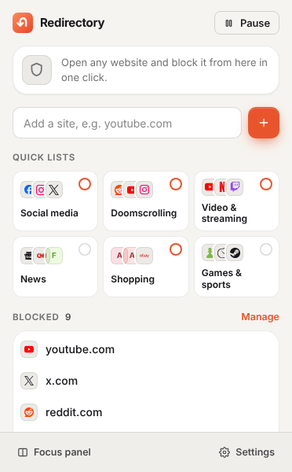
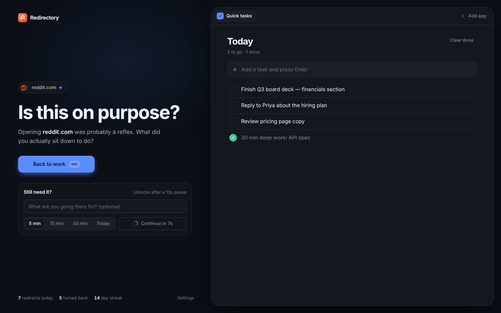

Block anything, precisely
Type youtube.com to block it and every subdomain, or reddit.com/r/all to block just the feed. Paste a whole list at once.
Free Chrome extension · Open source
Redirectory blocks the sites that pull you off course and puts your to-do list in their place — Notion, Todoist or a simple built-in list. Need the site anyway? Wait ten seconds and choose how long.
No account. No tracking. Works in Chrome, Edge, Brave and Arc.

Your task app, right where the distraction was
Features
Most blockers are a wall you learn to climb. Redirectory is a speed bump with a better destination.
Type youtube.com to block it and every subdomain, or reddit.com/r/all to block just the feed. Paste a whole list at once.
The block page shows Notion, Todoist, TickTick, Google Tasks — or a built-in list. The thing you should be doing is one click away.
Continue unlocks after a short countdown that only runs while you're looking. Optionally name why you're going. Often, that's enough.
Pick how long you need. When time's up, open tabs return to the block page. The door closes itself.
Social media, doomscrolling, video, news, shopping, games. Switch a whole category on with one click, or block the current tab with Alt+Shift+B.
No account, no servers, no analytics. Your list, tasks and stats never leave your browser. The code is open for anyone to read.
How it works

Themes
Pick one below to see it.

Install
chrome://extensions and switch on Developer mode.FAQ
Yes. Redirectory is open source under the MIT license. There's no account, subscription or upsell.
Most task apps refuse to load inside other pages. Redirectory lifts that restriction only for frames inside its own block page — nowhere else on the web. Sign in to the app in a normal tab once, and it loads with your account.
Wait out the countdown (10 seconds by default), choose 5, 15 or 30 minutes or the rest of today, and you're through. When time's up, open tabs on that site return to the block page.
Pause for 15 minutes, an hour or the rest of the day from the toolbar. Blocking turns itself back on — no need to remember.
No. Everything is stored locally in your browser. The only network requests fetch icons for sites that don't have a logo bundled with the extension. Read the privacy policy.
Chrome and other Chromium browsers with Manifest V3 support: Edge, Brave, Arc, Vivaldi and Opera.